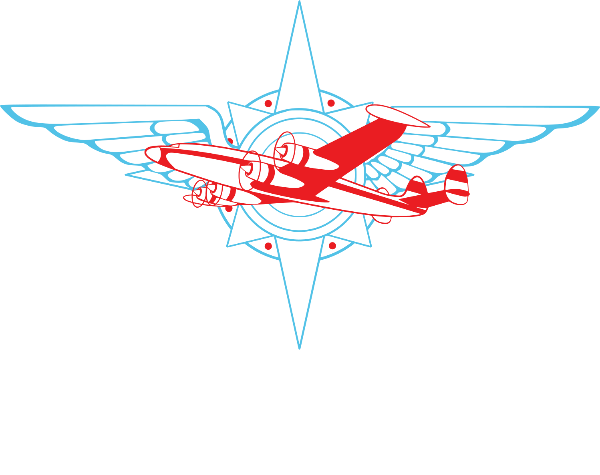
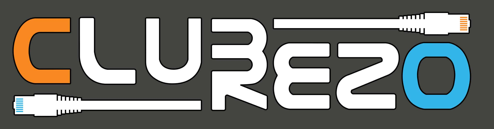
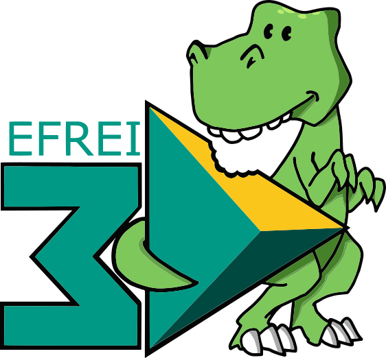
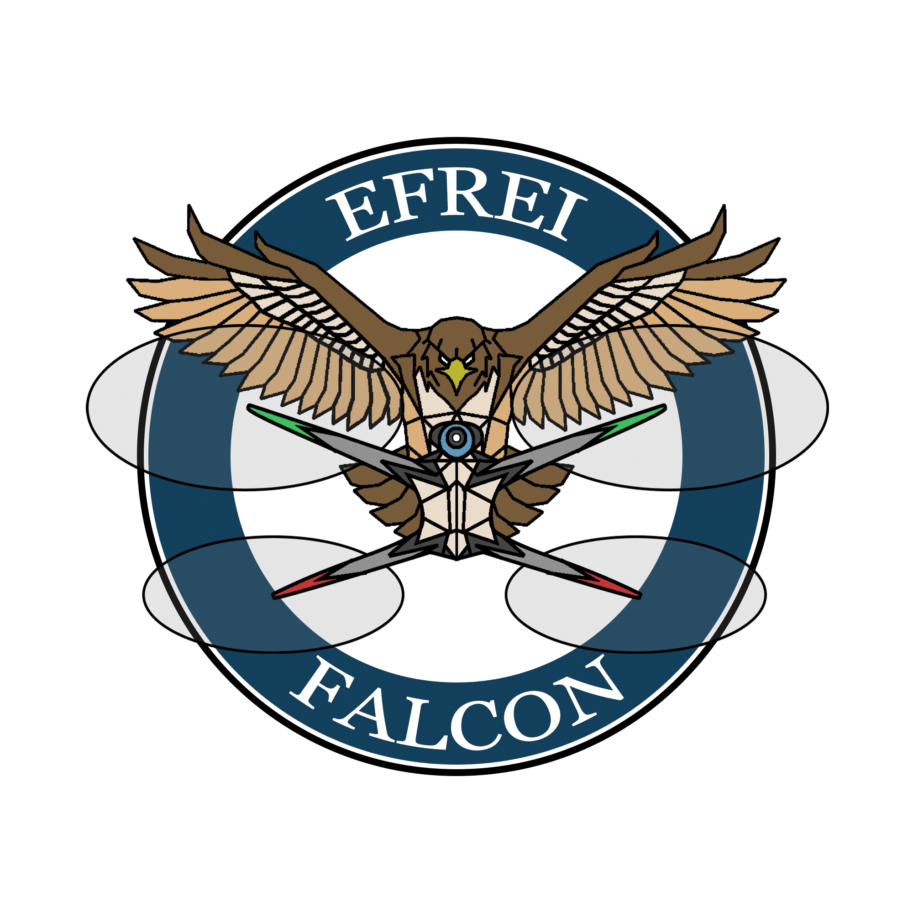

Aero Efrei
Aéronautique
L'association réunit les passionnés d'aéronautique autour de formations, d'un simulateur de vol et de sorties comme le salon du Bourget.

À l'EFREI, la vie étudiante permet de progresser en informatique autrement : projets associatifs, entraide, événements techniques et challenges en équipe.
Les associations autour du numérique donnent aux étudiants l'occasion de pratiquer, de partager leurs connaissances et de travailler sur des projets concrets en dehors des cours. Elles sont aussi un bon moyen de rencontrer d'autres passionnés.

Aéronautique
L'association réunit les passionnés d'aéronautique autour de formations, d'un simulateur de vol et de sorties comme le salon du Bourget.

Réseaux
Club Rézo organise des rézals, une nuit de jeux sur le campus. En lien avec le service informatique de l'école, elle porte des projets réseau et techniques grâce à ses serveurs.

Cybersécurité
CTfrei initie les étudiants aux CTF (Capture The Flag) et à la cybersécurité. Elle participe à des CTF universitaires et forme une équipe pour la compétition InCyber.

Technologies 3D
L'association Efrei 3D initie à la modélisation, à la création de jeux et à l'impression 3D, avec des formations pour bien utiliser les équipements du FabLab.

Drones
Ce club forme les étudiants à construire, réparer et piloter des drones FPV, avec des ateliers pour tous les niveaux dispensés au FabLab.

Technologies & Innovations
ICE (Innovation, Conception, Evolution) rassemble les passionnés de nouvelles technologies autour de projets innovants : glacière connectée, table d'air hockey ou encore supercalculateur.
L'école met à disposition des étudiants de nombreux espaces et équipements pour travailler dans de bonnes conditions. Les salles de TP sont équipées d'ordinateurs, les salles de cours disposent de tableaux connectés, et plusieurs espaces spécialisés permettent de créer, prototyper, filmer et expérimenter.
Les étudiants peuvent utiliser des salles équipées d'ordinateurs pour les travaux pratiques, les projets de programmation et les séances encadrées. Les tableaux connectés facilitent les démonstrations et le travail collaboratif.
L'Innovation Lab rassemble 6 imprimantes 3D FDM, une découpeuse laser, une fraiseuse numérique, un scanner 3D, des paillasses électroniques, un atelier avec petit outillage et outillage portatif, un espace réalité virtuelle, un espace design, une brodeuse numérique Brother Innovis V3, une découpeuse vinyle Cricut et des PC CAO avec de nombreux logiciels.
Le Studio est un espace de création pensé comme un laboratoire de créativité. Il propose un espace de tournage et de post-production pour réaliser interviews, vidéos, podcasts ou projets artistiques, du matériel audio et sound design, ainsi que des outils de réalité virtuelle pour concevoir et explorer des environnements immersifs.